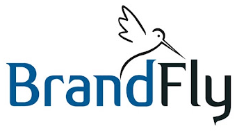

Outreach Dashboard
User Guide
How to find new leads, run personalised email campaigns, let the AI answer replies and get meetings booked, all from one dashboard.
Dashboard: https://app.zmart.cloud · Your login details are sent to you separately · Version: November 2026
Contents
1How the system works
2Signing in
3Your 5-minute daily routine
4The menu at a glance
5Launching a campaign
6Replies and the AI
7The Inbox
8Meetings
9Leads and follow-ups
10Email Analytics
11Exporting data
12Settings and services
13Mailboxes and good practice
14Questions and fixes
In one sentenceYou choose who to reach. The system finds those people, studies each company's website, writes a personal email sequence, answers replies within seconds and books meetings straight into your Google Calendar.
1How the system works
Six steps run automatically. You only start step 1 and join the meetings.
Step 1 · You
Launch a search
Describe who you want to reach (place, industry, role, company size). Takes 1 minute.
Step 2 · Automatic
Leads are found and studied
Verified decision makers are found. Each company's website is read and checked for real problems (speed, tracking, security, no own shop).
Step 3 · Automatic
Personal emails are written
The AI writes 4 emails per lead about that company's business and its verified problem.
Step 4 · Automatic
Emails go out with follow-ups
Email 1 is sent, then follow-ups on day 3, 7 and 11, but only while the person has not replied.
Step 5 · Automatic
The AI answers replies
Usually within 20-30 seconds, in the same email thread. Interested people get 3 free time slots to click.
Step 6 · You
Join the meeting
The booking lands in Google Calendar with a Google Meet link, a briefing ("dossier") and a row in the Google Sheet.
Email onlyThe system only uses email. It never calls, texts or messages anyone on WhatsApp.
Where things happen
| Part | What it does for you |
|---|
| This dashboard | Your control room: launch searches, read every conversation, see meetings, numbers and reports. |
| Smartlead | Sends email 1 and the follow-ups from your mailboxes and keeps them warmed up. You rarely need to open it. |
| Google Calendar | Holds your meetings with the Google Meet link. The system only offers times that are free in your calendar. |
| Google Sheet | "Scheduled Meetings": one row per meeting, for your records. |
2Signing in
- Open https://app.zmart.cloud in any browser (computer or phone).
- Enter the username and password you received.
- Tick Keep me signed in for 30 days on your own device. Leave it unticked on a shared computer.
- To leave, click Sign out at the bottom of the left menu (on a phone: the arrow icon at the top right).
Keep the password privateAnyone with it can see your leads and send replies. After several wrong attempts the login is blocked for 15 minutes. To change the password, ask your BrandFly contact.
3Your 5-minute daily routine
- Inbox → Needs you. These replies need a person (for example a complaint, a billing question or something the AI should not answer alone). Answer them from the Inbox.
- Meetings → Today. Open each meeting to read the briefing, then click Join Google Meet at the time.
- After each meeting set the outcome (for example Completed - Proposal Sent or No Show) and add notes.
- Email Analytics. Check that all mailboxes show Connected and that bounces stay low.
- Launch a new search when you want more leads (about 20-40 at a time is a good size).
You do not need to answer the AI's conversationsEvery normal reply is answered for you. You can read them all in the Inbox and step in at any time.
4The menu at a glance
The menu is on the left (on a phone: at the bottom). The green Launch button is at the top right of most pages.
| Menu item | What you see there | Use it to |
|---|
| Command Center | Headline numbers: qualified leads, active sequences, positive reply rate, meetings this week, pipeline value, the outreach funnel and upcoming meetings. | See at a glance how outreach is going. |
| Inbox | Every conversation from every mailbox and campaign, with the AI's answers. | Read replies and step in when needed. |
| Meetings | Call sheet and calendar of booked meetings, each with a briefing. | Prepare, join, record outcomes and notes. |
| Lead Intelligence | All leads with pain point, score, country, industry and stage. Search and filters. | Review who was found and why. |
| Services | What you sell, its sub-services and the email campaign each one uses. | Add or change what you offer. |
| Sequence Monitor | Each lead's 4-email sequence and where it stands. | Read the emails, pause or resume follow-ups. |
| Email Analytics | Emails sent, replies, bounces, campaigns and mailbox health. | Check performance and deliverability. |
| Weekly Reports | A ready weekly summary with a shareable link. | Share results with your team or clients. |
| Settings | AI reply prompt and starting price, brand and logo, meeting alerts. | Adjust how the AI talks and who gets meeting emails. |
Live updatesPages refresh on their own when something happens (a reply, a booking). A small "Live" badge at the top shows the connection.
5Launching a campaign
Click the green Launch button. A panel opens with the search on the left and a summary with the cost estimate on the right.
The quick way: describe it in one sentence
- Type what you want, for example: "Find 40 founders of jewellery stores in Dubai and London".
- Click Fill with AI. The AI fills in place, industry, roles, size and number of leads.
- Check the fields it changed (they are listed under the sentence), adjust anything, then click Launch campaign.
The detailed way: set the filters yourself
| Field | What to choose |
|---|
| Lead source | AI Ark (verified emails) or Apify (lower cost). Your choice is remembered. |
| What you sell | A service line and, if you like, one specific sub-service. Use Add a specific service to add a new one on the spot. |
| Email campaign | Chosen automatically from the service. Change it only if you want a different campaign. |
| Places | Countries, cities or regions. Start typing to pick from the list. |
| Industries | Pick from the list or type your own (for example "Jewellery"). |
| Decision makers | Roles such as Founder, CEO, Owner, Managing Director. You can add extra job titles and titles to skip. |
| Company size | Number of employees. Smaller companies usually answer more. |
| Revenue | Keep the default range, or switch on Any revenue to widen the search. |
| Email type | Work emails only is recommended for deliverability. |
| Per company / How many | Maximum people per company (2 is a good default) and the total number of leads. |
| More filters | Optional keyword, for example "Shopify". |
Save as defaultSet the filters you use most, then click Save as default at the bottom. Launch opens with them every time. Reset brings them back.
What happens after you click Launch
- Leads appear in Lead Intelligence within a few minutes, each with its pain point and score.
- Each lead gets 4 personal emails and is added to the email campaign.
- Emails are sent within each mailbox's daily limit, so a large batch goes out over several days.
- Not every person found is used: leads without a verified work email, outside your filters or not a decision maker are skipped.
- The right-hand panel shows the estimated cost before you launch.
6Replies and the AI
When a prospect replies, follow-ups stop and the AI takes over the conversation in the same email thread, usually within 20-30 seconds.
| The prospect writes | What the AI does |
|---|
| "Interested" / "Let's talk" | Thanks them and offers 3 time buttons taken from your free calendar times, plus a link to pick another time. |
| A question (services, price, process) | Answers using your company information and reply prompt, then asks about their needs. |
| Accepts a time in words | Books that time if it is still free and confirms it. |
| "Not interested" / "Remove me" | Stops all emails to that person. No further contact. |
| An out-of-office reply | Does not answer; the conversation stays open. |
| A complaint, billing, legal or unusual request | Does not answer alone. The conversation is marked Needs you in the Inbox. |
How times are chosen
- Only times that are free in both your booking calendar and your Google Calendar are offered, so meetings never overlap.
- Times are shown in the prospect's own time zone and only between 8:00 and 18:00 there.
- When the prospect clicks a time, the calendar is checked again before booking. If it was taken in the meantime, they are asked to pick another.
The AI follows your instructionsWhat the AI says and the starting price it may mention are set in Settings → AI reply prompt (see section 12).
7The Inbox
Your main inbox for all prospects. The list is on the left, the conversation on the right.
Finding a conversation
- Replied: everyone who answered.
- Needs you: replies a person should answer.
- Interested: people who want a meeting or booked one.
- All: everyone who was emailed.
- Use the search box (name, email, company) and the campaign filter.
Reading a conversation
- Messages show as a chat. Labels: Email 1-4 (sequence), Reply (the prospect), AI reply, You.
- Show more opens long emails; View email shows the original design.
- New messages appear on their own.
Answering yourself
- Open the conversation and click the bar Write a reply yourself at the bottom.
- Write your message. A greeting and your signature are filled in for you.
- Click Send, then click again to confirm. It goes out from the same mailbox, in the same thread.
Use this Inbox, not Smartlead'sAnswers go out straight from your mailbox so they arrive fast. That is why Smartlead's own inbox does not show the AI's answers. This Inbox always shows the whole conversation. Copies are also saved in each mailbox's Sent folder.
8Meetings
When a meeting is booked, you get
- A Google Calendar event with a Google Meet link; the prospect gets the invite too.
- A confirmation email to the prospect in the same thread.
- A row in the Google Sheet "Scheduled Meetings".
- The meeting on the Meetings page, with a briefing.
Using the Meetings page
- Choose Upcoming, Today, This week, Past or All, and switch between the call sheet and the Calendar view.
- Click a meeting to open its briefing: the company, the pain point found on their website, suggested discovery questions, talking points and the email conversation.
- At the time, click Join Google Meet.
- Afterwards set the outcome: Scheduled, Completed - Proposal Sent, Closed Won, No Show, Rescheduled or Cancelled.
- Type notes in the notes box. They save automatically and are copied to the Google Sheet.
Meeting emails in Gmail
In Settings → Meeting alerts, add the people who should get meeting emails (for example the sales team). The page also explains how to switch on Google Calendar's Daily agenda email, so each morning's meetings arrive in Gmail with their Meet links.
Reschedule or cancelIf a prospect reschedules or cancels using their invite, the calendar, the Sheet and the Meetings page update automatically.
9Leads and follow-ups
- Lead Intelligence lists every lead with its pain point, score (80 and above is high priority), stage and the recommended service. Use the filters and search to narrow the list.
- Sequence Monitor shows each lead's 4 emails, which ones were sent and whether they replied. Use Pause follow-ups to stop emailing someone (for example if you already spoke to them) and Resume follow-ups to continue.
- Follow-ups stop on their own when someone replies, unsubscribes or the email bounces.
10Email Analytics
Choose 7 days, 30 days or 90 days at the top right.
| Block | What it tells you |
|---|
| Top numbers | Emails sent, replies and reply rate, interested replies, meetings booked, bounces and unsubscribes. |
| Leads row | Leads uploaded, contacted, waiting to start, still in the sequence, finished, and mailboxes connected. |
| Day by day | A chart of sent, replied and bounced emails per day. |
| Replies by intent | How replies were read (interested, question, not interested, out of office) and how many the AI or you answered. |
| Campaigns | Each email campaign: status, leads, sent, replies, reply rate, bounces. |
| Sending mailboxes | Each mailbox: connected or not, emails sent today against its daily limit, warm-up and reputation. |
Open and click tracking is off on purposeTracking pixels and rewritten links push emails into spam. Replies and meetings are the numbers that matter.
11Exporting data
Click Export at the top of Command Center, Inbox, Leads, Meetings, Sequence Monitor or Email Analytics.
- What: Leads, Email activity or Meetings.
- Which: for leads: all, emailed, replied, interested, meeting booked or not emailed yet. For email activity: last 7, 30, 90 days or all time. For meetings: upcoming, past or all.
- Download as: CSV (opens in Excel or Google Sheets), PDF (to share or print) or Markdown (for documents or Notion).
Lead exports include name, email, role, company, website, LinkedIn, country, industry, what the company does, pain point, recommended service, score, stage, reply and meeting. Email activity lists every email sent, every reply and every answer with its text.
12Settings and services
Settings → AI reply prompt
The instructions the AI follows when it answers prospects (who you are, your services, tone, what not to say) and the starting price it may mention. Edit the parts, check the Live preview of what a prospect would read, then save. You can always go back to the built-in version.
Change it carefullyThe prompt affects every future reply. Change one thing at a time and read the preview before saving.
Settings → Brand & logo
Upload your logo and set the dashboard name. They appear in the menu, on the login page and in the browser tab.
Settings → Meeting alerts
Email addresses that receive meeting notifications, plus the steps to get Google Calendar's daily agenda by email.
Services
Add a service line, its sub-services and the signals to look for, and choose which email campaign it uses. New sub-services show up in Launch straight away.
Weekly Reports
Click Generate Weekly Client Report. You get a shareable link; open it and use Save as PDF to keep a copy.
13Mailboxes and good practice
- Warm-up first. New mailboxes need 2-3 weeks of warm-up before real campaigns. Keep warm-up switched on in Smartlead all the time.
- Daily limits. Each mailbox sends a limited number of emails per day (about 20 while warming). To send more, add more mailboxes rather than raising the limit.
- Adding a mailbox. Connect it in Smartlead, then ask your BrandFly contact to link it to the system, so its replies are answered within seconds too.
- Starting a campaign. Each email campaign is switched on once in Smartlead (with its mailboxes attached). After that, new leads you launch are sent automatically.
- Keep Smartlead's own AI auto-reply OFF. This system answers replies; two systems answering would confuse prospects.
- Watch bounces. If bounces go above about 3%, pause and check the lead filters (prefer verified work emails).
- Keep Smartlead paid. Emails stop if the Smartlead subscription ends.
- Start small. Launch 20-40 leads, read the first replies, then scale up.
Why the emails look simpleThe email design has no images and no tracking, so it reaches the inbox instead of spam and looks like a personal note with one booking button.
14Questions and fixes
A reply is not in the Inbox yet.
Wait a minute or click the refresh icon. Make sure you are on https://app.zmart.cloud. A reply from a different address than the one we emailed (for example a colleague) is shown as an alert so a person answers it.
The AI did not answer a reply.
Open Inbox → Needs you. Replies about complaints, billing, legal topics or prices outside the approved starting price are left for a person on purpose.
A search found very few leads.
Widen the search: more places, industries or roles, a bigger company size range, Any revenue, or allow personal emails. Very narrow niches simply have fewer verified decision makers.
Emails land in spam.
Give mailboxes more warm-up time, keep daily volumes low and ask early recipients to mark emails as "Not spam". Avoid adding links or images to the emails.
A prospect says the time button did not work.
The slot was probably taken in the meantime; they see a message to pick another time or use the booking link.
I want to change what the AI says about prices.
Settings → AI reply prompt → Starting price. The AI never quotes any other amount on its own; such replies go to Needs you.
I forgot the password or need another login.
Contact your BrandFly contact.
Need help?Contact your BrandFly account manager with a short description and, if possible, a screenshot.